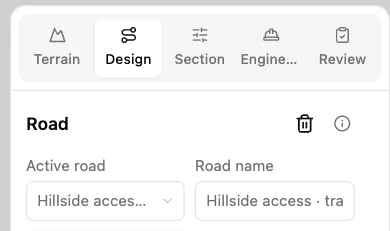
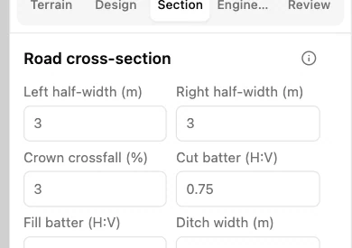
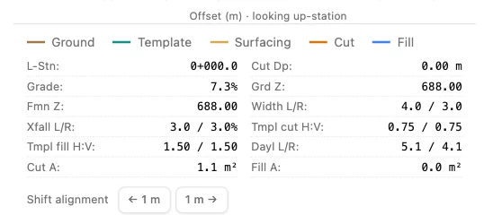

Change the road cross-section
In Guided mode, use the unedited Hillside access training road at station 0, where the default template applies. Start in Linked overview so the section drawing is visible.
1. Open the section settings
Select Section in the workflow tabs. Road cross-section contains the widths, crossfall, batters and ditch dimensions for the road.

2. Widen the left side
Change Left half-width (m) from 3 to 4 and press Tab. Leave Right half-width (m) at 3. Each width is measured from the road centreline.

3. Verify the resulting widths
In the cross-section detail, Width L/R now reads 4.0 / 3.0 m. The left side is one metre wider, giving a total running width of seven metres at this station.
